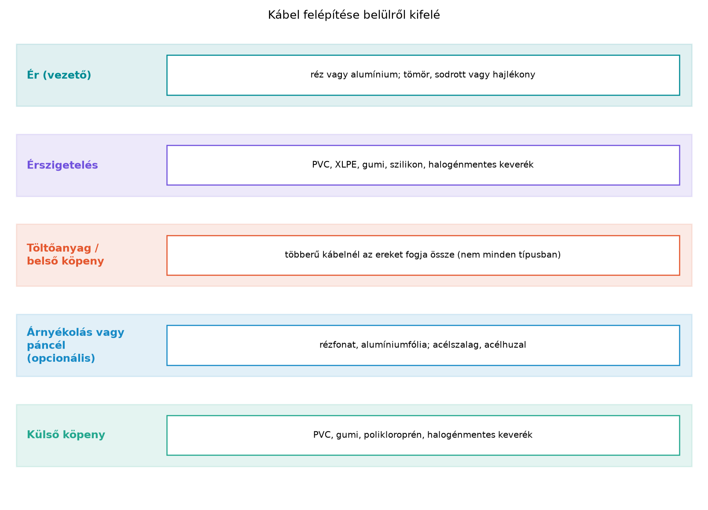

A munkahelyen gyakran úgy érkezel a helyszínre, hogy a megrendelő már vett „valamilyen” vezetéket, vagy a raktárból kell anyagot kiadni. Ha rossz típust viszel, az eredmény nemcsak hulladék, hanem balesetveszély is lehet: egy PVC-szigetelésű, köpeny nélküli szerelővezeték kültéren megreped, egy földbe nem való kábel meghibásodik, egy hajlékony finom szálú vezeték rosszul rögzíthető a sorkapocsban. Ezért a típusjelölést nem elég „kisilabizálni” – meg kell értened, melyik betű milyen felépítést és felhasználási helyet enged meg.
Ebben az alfejezetben azt tanulod meg, hogyan bontsd fel a harmonizált és hazai vezetékjelöléseket, hogyan azonosítsd a rétegeket (ér, szigetelés, köpeny, páncél, árnyékolás), és hogyan válaszd ki a szerelési módhoz illő típust. A tűzvédelmi (CPR) osztályokat is röviden áttekintjük, mert egyre több építkezésen ezt kérik a kivitelezőtől.
A vezetékek és kábelek réteges felépítésűek. Egy egyszerű szerelővezeték csak egy vagy több szigetelt érből áll, míg egy kábel közös védőköpenyt, esetleg páncélzatot vagy árnyékolást is tartalmaz.

A képen látható rétegek közül mindegyiknek meghatározott szerepe van:
tömör (egyetlen vastag szál), sodrott (több
vastag szál), vagy hajlékony (sok vékony szál). A hajlékony
felépítés fontos mozgó fogyasztóknál, dugaszoló aljzatok bekötésénél,
míg a tömör ér jól fektethető szerelőcsatornába.Ezt a rétegződést kell felismerned a kábel megmunkálásakor is: a szigetelés eltávolítása nem sértheti a következő réteget, a köpeny bemetszésekor pedig nem vághatod be az árnyékolást vagy az érszigetelést.
Definíció. Vezeték (wire): egy vagy több szigetelt ér, amely nem rendelkezik közös külső köpennyel. Ilyen például a H07V-U szerelővezeték, amelyet védőcsőbe vagy zárt szerelőcsatornába húzunk (a cső lehet vakolat alatt is); közvetlenül vakolatba ágyazni nem szabad (ellenőrizendő: MSZ HD 60364-5-52, szerelési módok).
Definíció. Kábel (cable): szigetelt erek és közös védőköpeny, valamint adott esetben páncél vagy árnyékolás együttese. A kábel önállóan, védőcső nélkül is szerelhető, mert a köpeny megvédi a belső erek szigetelését.
Definíció. Ér (core/conductor): az áram vezetésére szolgáló fémrész. A kábelben az erek lehetnek tömör vagy sodrott kivitelűek, és különböző színű érszigeteléssel vannak ellátva.
Definíció. Szigetelés (insulation): az ér köré felvitt, nagy ellenállású anyag, amely megakadályozza az érintkezést más erekkel és a környezettel. Az érszigetelés nem azonos a teljes kábel köpenyével.
Definíció. Köpeny (sheath / outer jacket): a kábel külső védőburkolata. A köpeny mechanikailag és vegyileg védi az erek szigetelését, de általában nem szolgál elsődleges szigetelésként a feszültség alatti rész és a föld között.
Definíció. Árnyékolás (screen/shield): vezetőképes réteg vagy fonat, amely a kábel belsejét védi a külső elektromágneses zavaroktól, vagy a belső jelet nem engedi kisugározni. Gyakran együtt jár az „S” vagy „F” jelöléssel a gyengeáramú kábeleknél.
Definíció. Páncél (armour): fém (acél vagy alumínium) réteg, amely mechanikai védelmet ad a kábelnek. A páncél földelhető, de nem tévesztendő össze az árnyékolással.
A hazai és európai piacon a leggyakoribb típusjelölések harmonizált (H…) jelölésűek. A harmonizált rendszerben a jelölés felépítése:
H – harmonizált (ha nincs H, nem
harmonizált, nemzeti jelölés).03 = 300/300 V, 05 = 300/500 V,
07 = 450/750 V (ellenőrizendő: MSZ HD 361).V = PVC, R = gumi,
N = polikloroprén, S = szilikon,
B = etilén-propilén gumi, X = térhálósított
polietilén (XLPE), Z/Z1 = halogénmentes
keverék (térhálósított, illetve hőre lágyuló; például H07Z1-K:
halogénmentes, hajlékony egyerű vezeték kapcsolószekrénybe és
középületbe). Az X, Z és Z1
pontos megfeleltetése: (ellenőrizendő: MSZ HD 361).U = tömör vezető,
R = sodrott (merev) vezető, K = hajlékony
(finom szálú) vezető fix szereléshez, F = hajlékony vezető
zsinórhoz, mozgó csatlakozáshoz, H = igen hajlékony vezető.
A lapos kivitelt a kötőjel előtti H/H2 jelzi
(ellenőrizendő: MSZ HD 361 aktuális kiadás).Nézzük a leggyakoribb példákat:
H harmonizált, 07
450/750 V, V PVC-szigetelés, U tömör réz ér.
Ez a klasszikus merev szerelővezeték. Csőben vagy zárt
csatornában használják (a cső lehet vakolat alatt is, de a vezetéket
közvetlenül vakolatba ágyazni nem szabad); nem hajlítható nagy szögben,
és nem mozgó fogyasztóhoz.R sodrott ér;
valamivel hajlékonyabb, mégis merevnek számít.F jelű zsinórvezeték
kell).05 300/500 V, V
PVC-szigetelés, második V PVC-köpeny, F finom
szálú hajlékony ér. Ez a közepesen hajlékony, fehér/fekete köpenyes
kábel, tipikusan háztartási készülékek csatlakoztatására, mozgó
fogyasztókra alkalmas.R gumiszigetelés,
N polikloroprén köpeny, F finomszálú; kültéri,
nedves, olajos környezetben használható, könnyű igénybevételre való
hajlékony kábel (például kerti készülékekhez).A harmonizált jelölések mellett a kábel feliratán mindig szerepel a
gyártó, a keresztmetszet és az ér szám, például 3G2,5
(három ér, ebből egy zöld-sárga védővezető, 2,5 mm²) vagy
4x16 (négy ér, 16 mm², nincs külön jelölt védővezető).
Figyelem. A jelölésben a G betű a
védővezetővel ellátott („green/yellow”) kábelt jelzi, az x
pedig a védővezető nélküli érszámot. A feszültségszint
()
legalább akkora legyen, mint az áramkör névleges feszültsége: a
05 (300/500 V) és a 07 (450/750 V) jelű
vezeték egyaránt megfelel a 230/400 V-os hálózatnak.
A harmonizált jelölés mellett a magyar gyakorlatban nemzeti jelölésű kábeleket is találsz. Ezeket a jelöléseket nem mindig lehet egy az egyben átfordítani, de a betűjelentések hasonló logikát követnek.
N szabványos (német
Norm, VDE szerinti) típus, Y PVC-szigetelés,
M köpeny (a német Mantel szóból), J
védővezetőt tartalmaz. Ez a lakás- és épületszerelésben általánosan
használt köpenyes szerelőkábel: száraz, nyirkos és nedves beltéri
helyiségben, vakolat alatt és felett is szerelhető, napsugárzástól
védett helyen kültéren is; földbe nem fektethető (ellenőrizendő: gyártói
adatlap). A kapcsolószekrényen belüli huzalozásra a H07V-K való.N szabvány, Y
PVC-szigetelés, Y PVC-köpeny, J védővezetőt
tartalmaz. Az NYM-nél robusztusabb köpenyű, gyakran földbe
fektethető típusnak számít, de mindig ellenőrizd a gyártói adatot.
Az NYY-J-t gyakran használják kültéri, föld alatti vagy betonba ágyazott
szerelésre.MCu műanyag szigetelésű, köpeny nélküli, tömör rézvezeték
(mai megfelelője: H07V-U), az MBCu műanyag szigetelésű és
műanyag burkolatú (köpenyes) rézvezeték (NYM-J-hez hasonló), a hajlékony
tömlővezetékek az MT családba tartoztak (mai megfelelője:
H05VV-F). A megfeleltetés tájékoztató, a feliraton a feszültségszintet
és a CPR osztályt is ellenőrizd (ellenőrizendő: a régi MSZ jelölési
szabvány vagy gyártói katalógus, a pontos felbontás és
megfeleltetés).N szabvány, A
alumínium ér, 2X térhálósított polietilén (XLPE)
érszigetelés, Y PVC-köpeny. Ez tipikus alumínium
földkábel erősáramú elosztáshoz. Alumíniumot csak megfelelő
méretezéssel és oxidációmentes kötéssel szabad alkalmazni.A gyakorlatban tehát a felirat lehet harmonizált (H…) vagy nemzeti
(NYM-J, NYY-J, NA2XY stb.). A kiválasztáskor mindig nézd meg a gyártói
adatlapot, mert ugyanaz a betű nem mindig ugyanazt jelenti (például az
Y mindig PVC-t jelent, de a 2Y már
polietilént, a 2X térhálósított polietilént).
Az erősáramú hálózatok mellett a villanyszerelő ma már mindig találkozik gyengeáramú kábelekkel is: számítógép-hálózat, TV, telefon, riasztó, épületautomatika. Ezek felépítése eltérő, és a jelölésük is más logikát követ.
CAT5e, CAT6,
CAT6a osztályozással találkozol; a szám a sávszélességre
utal. Belül négy érpár, színes szigeteléssel (pl. kék-fehér,
narancs-fehér, zöld-fehér, barna-fehér). Irodákban, lakásokban belső
hálózathoz használják. Az UTP nem alkalmas erősáramú 230/400 V-os
áramkörhöz.S vagy
F az árnyékolást jelzi (pl. S/FTP: páronként
fólia, összefonat).A következő két csoport nem kizárólag gyengeáramú: tűzálló és halogénmentes kábelek erősáramú áramkörökben (biztonsági világítás, füstelvezető motor) is előfordulnak.
FE180 a
kábel szigetelésmegtartó képességét jelöli (180 perc, a kábelt önmagában
vizsgálva); az E30, E60, E90 a
kábelrendszer funkciómegtartása 30/60/90 percig, és csak a bevizsgált
rögzítéssel és tartószerkezettel együtt érvényes (ellenőrizendő:
hatályos OTSZ és műszaki irányelv). Az FE180 kábel tehát
önmagában nem garantál 90 perces funkciómegtartást, ha a rögzítés nem
minősített. Ezeket tűzjelző rendszerekhez, biztonsági világításhoz,
füstelvezető motorokhoz kell használni. A tűzálló kábelek gyakran
szervetlen szigetelésűek (pl. mica-szalag, ásványi szigetelés).LSZH,
LSOH, FRNC jelöléssel. Középületekben,
alagutakban, zárt terekben egyre inkább ezeket írják elő.A CPR (Construction Products Regulation, építési termék rendelet) a kábelek tűzvédelmi viselkedését osztályozza. Ez nem a kábel felépítését, hanem az égési tulajdonságait minősíti: mennyire járul hozzá a tűz terjedéséhez, mennyi füstöt és égve csepegő részecskét termel.
A fő osztályok (a legjobbtól a legrosszabbig): Aca,
B1ca, B2ca, Cca,
Dca, Eca, Fca. A kiegészítő
jelek:
s1 (kevés), s2,
s3 (sok)a1, a2, a3d0 (nincs), d1,
d2Például egy Cca-s1,d1,a1 jelölésű kábel közepes
tűzterjedési osztályú, kevés füstöt termel, alig csepeg égve, és
alacsony savasságú. A CPR osztály a teljesítménynyilatkozatban (DoP) és
a kábeldob/csomagolás címkéjén szerepel, a legtöbb gyártó pedig a kábel
palástjára is rányomtatja (ellenőrizendő: MSZ EN 50575, jelölési
előírások).
A magyarországi gyakorlatban középületekben, társasházi közös
terekben, menekülési útvonalakon gyakran előírják, hogy a kábelek
legalább Cca-s1,d1,a1 osztályúak legyenek, de ez
létesítményenként és a hatályos tűzvédelmi előírástól függően változik.
A tűzvédelmi terv és a hatályos OTSZ előírásai adják a pontos
követelményt. (Ellenőrizendő: az aktuális OTSZ és a CPR szerinti
minimális osztályok.)
A kiválasztásnál tehát a tűzvédelmi osztály nem pótolja a tűzállóságot: a CPR az égési viselkedést minősíti, míg a tűzállóság (szigetelésmegtartás: FE; funkciómegtartás: E30, E90) a tűz alatti működőképesség időtartamát adja meg.
Szabvány. A vezetékek és kábelek kiválasztására, valamint a szerelési módokhoz rendelésre az MSZ HD 60364-5-52 (Kisfeszültségű villamos berendezések – A villamos vezetékek kiválasztása és szerelése) ad általános követelményeket. A kábelek tűzvédelmi osztályait az MSZ EN 50575 (CPR) szerint kell feltüntetni és igazolni. A vezető anyagára és ellenállására vonatkozó követelmények a vonatkozó termékszabványokban (pl. MSZ EN 60228) szerepelnek. A pontos szabványszakaszokat és a hatályos kiadásokat mindig ellenőrizd a munka tervezésekor. (Ellenőrizendő: a felsorolt szabványszámok pontos kiadása és az alkalmazandó részek.)
Szabály. A típusjelölésből leolvasott
feszültségszintet, érszámot, keresztmetszetet és CPR osztályt egyeztetni
kell a tervezett áramkör feszültségével, a környezeti hatásokkal
(nedvesség, UV, mechanikai sérülés) és a helyi tűzvédelmi előírásokkal.
A vezeték névleges feszültsége
()
legyen legalább akkora, mint az áramkör névleges feszültsége: a 230/400
V-os hálózatban a 300/500 V-os (05, pl. H05VV-F, NYM-J) és
a 450/750 V-os (07, pl. H07V-U) vezeték egyaránt megfelel.
A választást a szerelési mód, a mechanikai igénybevétel és a
termékszabvány szerinti alkalmazási terület dönti el (pl. a köpeny
nélküli egyerű vezetékek jellemzően 450/750 V-osak). A 300/300 V-os
(03) vezeték csak könnyű, kis igénybevételű
készülékcsatlakozásra való (ellenőrizendő: gyártói adatlap). A gyártói
adat mindig mérvadó.
Szabály. Ha egy adott munkához vezetéket vagy kábelt kell választanod, kövesd az alábbi lépéseket:
05 (pl. H05VV-F, NYM-J)
és a 07 (pl. H07V-U) jelű vezeték egyaránt
megfelel, a végső választást a szerelési mód és az alkalmazási terület
dönti el.G jelölésű kábelben van
védővezető.Cca-s1,d1,a1). Tűzálló áramkörhöz a tervben előírt
funkciómegtartású (E30/E90) kábelrendszert
(kábel és minősített rögzítőrendszer) használd; az FE180
jelölés önmagában nem elég.Egy társasház felújításánál a vállalkozó kapott egy csomag
H07V-U vezetéket a belső világítási körökhöz, és a segéd
hozott egy H05VV-F kábelt a lépcsőházi mozgásérzékelő
bekötéséhez. A szerelő azonnal szólt: a H07V-U-t a falba csövezve
használják, nem mehet a mennyezet alatt szabadon, mert nincs köpenye. A
mozgásérzékelő fix szerelésű készülék, ezért a bekötéséhez is köpenyes
szerelőkábel (NYM-J 3G1,5) vagy csőbe húzott H07V-U kell; a hajlékony
H05VV-F csak mozgatott, dugós csatlakozású készülékhez való – a segéd
által hozott kábelt ezért visszaküldték (a 300/500 V-os névleges
feszültség egyébként megfelelne a 230 V-os áramkörnek, de a választást
az alkalmazási mód dönti el). A pincében lévő kábelcsatornához már
NYM-J-t választott, mert az köpenyes és mechanikailag ellenállóbb.
A tanulság: a típusjelölésből kiolvasott felépítés és feszültségszint dönti el, hogy a kábel használható-e az adott szerelési helyen. Egy rossz választás később szigetelésrepedéshez, zárlathoz vagy a szabványossági felülvizsgálat elutasításához vezethet.
03 jelű zsinórvezeték fix szerelésre vagy
erős igénybevételű helyre használata. A 300/300 V-os
(03) vezeték csak könnyű, kis igénybevételű
készülékcsatlakozásra való; fix szerelésben vagy mechanikailag
igénybevett helyen nem megfelelő (ellenőrizendő: gyártói adatlap,
termékszabvány alkalmazási területe). Mindig ellenőrizd a névleges
feszültséget és az alkalmazási területet is.Cca-s1,d1,a1) kihagyása nem
csak hibás, hanem az átadást is meghiúsíthatja. A kábel kiválasztásánál
mindig kérdezd meg, van-e CPR előírás.H07V-U jelölésben az U?H05 és mit a
H07?NYM-J és NYY-J között a
felhasználás szempontjából?Cca és mit az
s1?A válaszok a Megoldások szakasz elején, az „Önellenőrzés – válaszok” alcím alatt találhatók.
1. feladat (A)
Bontsd fel a H05VV-F jelölést: add meg minden betű és szám
jelentését.
2. feladat (A)
Miben különbözik a H07V-U a H07V-R vezetéktől?
Melyiket választanád fix szerelőcsatornába fektetéshez és miért?
3. feladat (B)
Kültéri, esőtől védett, de nedves helyre szerelt háromfázisú
csatlakozóhoz kábelt keresel. Két típus közül választhatsz:
H07V-U és H07RN-F. Melyiket választod, és
indokold meg a választásodat a felépítés és a környezeti hatások
alapján.
4. feladat (B)
Adott egy NYM-J 3G2,5 jelölésű kábel. Írd le, mit
jelentenek az egyes jelölésrészek, és mondd meg, milyen szerelési helyre
való, illetve hová nem szabad tenni.
5. feladat (C)
Társasházi közös folyosóra biztonsági világítási áramkört terveznek. A
tűzvédelmi leírás szerint a kábelnek tűz alatt legalább 90 percig
működőképesnek kell lennie, és kevés füstöt kell kibocsátania. Milyen
jelölésű kábelt keress? Sorold fel, milyen paramétereket kell
ellenőrizned a gyártói adatlapon.
6. feladat (C)
Egy kültéri földbe fektetendő erősáramú kábelen a következő feliratot
látod: NA2XY 4x16. Bontsd fel a jelölést, és válaszolj:
milyen anyagú a vezető, milyen a szigetelés, és miért kell az alumínium
vezetőt különös gonddal kötni?
7. feladat (D)
A tanműhelyben kapsz egy ismeretlen kábelmintát. Rajzold le a rétegeit
(ér, szigetelés, köpeny, esetleg árnyékolás), olvasd le a feliratot, és
azonosítsd a típust. Sorold fel, milyen méréssel vagy szemrevételezéssel
ellenőriznéd, hogy a kábel sértetlen és megfelel-e a feliratnak. A
feladatot feszültségmentes kábelen, oktatói felügyelet mellett végezd;
hálózati feszültségű munkát önállóan ne végezz.
U tömör (egyhuzalos) eret jelent, tehát a vezeték
egyetlen vastag szálból áll; a réz anyagot az jelzi, hogy nincs
alumíniumra utaló betű.H05 300/500 V-os, a H07 450/750 V-os
névleges feszültségszintet jelöl.NYM-J beltéri (száraz és nedves helyiség),
napfénytől védett kültéri szerelésre való, földbe nem; a köpenye
vékonyabb; az NYY-J vastagabb köpennyel készül, és gyakran
földbe fektethető (ellenőrizd a gyártói adatot).Cca a tűzterjedési osztály: közepes, a
B-k jobbak, az E/F rosszabbak. Az
s1 a füstkibocsátás: kevés füst.A H05VV-F felbontása: - H: harmonizált
típus. - 05: 300/500 V névleges feszültség. - első
V: PVC érszigetelés. - második V: PVC köpeny.
- F: finom szálú, hajlékony ér.
A H07V-U tömör réz ér, a H07V-R sodrott
(több vastag szál) réz ér. Fix szerelőcsatornába fektetéshez a tömör
U a jobb, mert merev, jól tartja az alakját, nem törik meg
a csatornában, és a sorkapcsokban is stabilan rögzíthető. A sodrott
R akkor előnyös, ha valamennyire hajlítgatni kell a
vezetéket, de fix telepítésre az U is megfelel.
Az H07RN-F kábelt választom, mert: - H07:
450/750 V-os, megfelel a 230/400 V-os hálózathoz. - R:
gumiszigetelés, amely ellenáll a nedvességnek és a hőingadozásnak. -
N: polikloroprén köpeny, amely az olajoknak és az időjárási
hatásoknak is ellenáll (a közvetlen napsugárzás elleni védelem külön
ellenőrizendő: adatlap). - F: hajlékony, így a
csatlakozóhoz köthető, mozgatható.
A H07V-U önmagában köpeny nélküli, PVC-szigetelésű merev
vezeték; nedves, kültéri környezetben hamar tönkremenne.
Az NYM-J 3G2,5 felbontása: - N: szabvány
szerinti kábel. - Y: PVC-szigetelés. - M:
köpenyes. - J: védővezetőt tartalmaz. - 3G2,5:
3 ér, ebből egy védővezető, 2,5 mm² keresztmetszettel.
Beltéri (száraz és nedves helyiség), napfénytől védett kültéri szerelésre való, pl. falba, csőbe, kábelcsatornába. Nem szabad földbe fektetni, mert a köpenye nem földkábelhez készült.
E90 funkciómegtartású kábelrendszert (kábel és minősített
rögzítőrendszer) kell keresni; az FE180 jelölés önmagában
nem elég (csak a szigetelésmegtartást jelzi). A CPR osztályból a
füstkibocsátás s1 (kevés füst), a csepegés d0
vagy d1, a savasság a1 legyen (a pontos
minimumot a tűzvédelmi terv adja). A kábel adatlapján és a
rögzítőrendszer tanúsítványán együtt kell szerepelnie az
E90 funkciómegtartásnak (bevizsgált kábelrendszer); a
kábelfeliraton jellemzően a CPR osztály és az FE180
szigetelésmegtartás látható. Például egy halogénmentes, tűzálló kábel
jelölése tartalmazhatja: FRNC, LSZH,
E90. A gyártói adatlapon ellenőrizni kell: a tűzállósági
időt, a CPR osztályt (pl. B2ca-s1,d1,a1 vagy jobb), a kábel
hőmérsékleti tartományát és a szerelési módot.
A NA2XY 4x16 felbontása: - N: szabvány
szerinti. - A: alumínium vezető. - 2X:
térhálósított (XLPE) szigetelés. - Y: PVC-köpeny. -
4x16: négy ér, 16 mm².
Az alumínium vezetőt azért kell különös gonddal kötni, mert felülete gyorsan oxidálódik (alumínium-oxid réteg), ami növeli az átmeneti ellenállást. Emellett a rézhez képest nagyobb fajlagos ellenállású, és elektrokémiai korrózió lép fel, ha közvetlenül rézzel érintkezik. Megfelelő kontaktpaszta, oxidmentesítés és az arra alkalmas kötőelemek szükségesek.
A gyakorlati feladatban a kábelmintán le kell rajzolni a rétegeket:
középen az ér (tömör vagy sodrott), körülötte az érszigetelés, majd ha
van, a közös köpeny, esetleg árnyékoló fonat vagy páncél. A feliratról
leolvasott típust azonosítani kell (pl. H05VV-F 3G1,5).
Szemrevételezéssel ellenőrizzük, hogy a köpeny sértetlen, a felirat jól
olvasható, a színjelölések megfelelőek. Méréssel (pl. szigetelési
ellenállás mérése az erek között, és ha van, az erek és az
árnyékolás/páncél között 500 V-os szigetelési ellenállásmérővel)
ellenőrizhető, hogy nincs-e rövidzár vagy földzárlat. A mérést csak
feszültségmentes, leválasztott kábelen, oktatói felügyelet mellett
végezzük.
A vezetékek és kábelek megbízható azonosítása a típusjelölésből
alapvető szerelői készség. A felépítés rétegei: az ér (tömör, sodrott
vagy hajlékony), az érszigetelés, a köpeny, valamint opcionálisan az
árnyékolás vagy páncél. A harmonizált jelölések (H05VV-F,
H07V-U, H07RN-F) a feszültségszintet, a
szigetelőanyagot és a hajlékonyságot kódolják. A hazai típusok
(NYM-J, NYY-J, NA2XY) a köpeny
meglétét, a vezető anyagát és a védővezető jelenlétét jelölik.
Gyengeáramú kábeleknél az UTP/STP és a koaxiális kábel a
jellemző. A tűzálló (E30, E90
funkciómegtartás; FE180 szigetelésmegtartás) és
halogénmentes (LSZH) tulajdonság erős- és gyengeáramú
kábelen egyaránt követelmény lehet. A CPR osztály
(B2ca-s1,d1,a1 stb.) a tűzterjedést, füstkibocsátást és
csepegést minősíti. A kiválasztásnál mindig a feszültségszint, a
környezet, az érszám, a keresztmetszet és a tűzvédelmi előírás dönt.
Továbbvitt eredmény. A típusjelölés felbontását – a feszültségszint, a szigetelő- és köpenyanyag, valamint a felépítés betűjeleinek értelmezését – használjuk a Színjelölés, keresztmetszet és szerelési módok alfejezetben, ahol a vezetékszíneket, a keresztmetszetet és a szerelési módot rendeljük egymáshoz. A most tanult jelölésrendszer nélkül a későbbi méretezési és szerelési útmutatók nem érthetők meg.